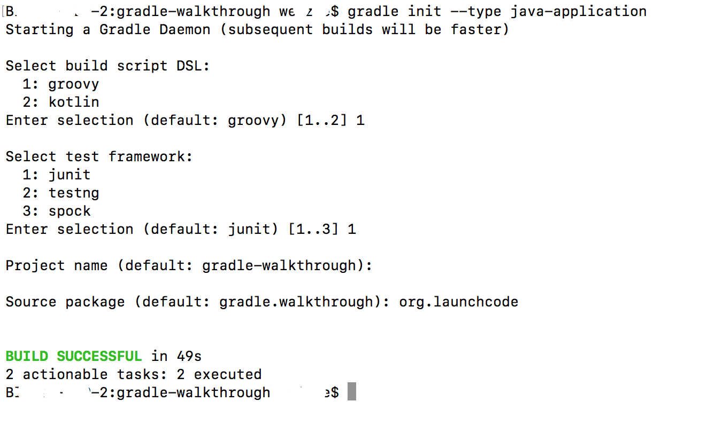

Walkthrough: Gradle
In this activity, we’ll create and customize a simple Gradle Java project using only the command line.
Getting Familiar With Gradle
Create a project directory::
$ mkdir gradle-walkthrough
$ cd gradle-walkthrough
Check if the gradle command is installed by running:
$ gradle -version
(if command not found)
$ brew update
$ brew install gradle
Initialize the project as a Gradle project using the Java application template::
$ gradle init --type java-application
Screenshot of questions asked by java init. Note this may look different if your version of Gradle is different.

Open the project in an editor and have a look around to see what Gradle created for you::
(this will open the current folder in the Visual Studio Code app, if code is on your path)
$ code .
Answer these questions:
- What does the project directory structure look like?
- What classes are part of your project?
- Which plugins is your project using?
- What are your project’s dependencies?
- Where will these dependencies be resolved from?
- What tasks are available to your project?
One of the tasks we have available is the test task. Let’s run it::
Assuming that the tests pass, let’s build the project::
When the build has successfully finished, locate the resulting .class files and the bundled JAR file.
Note
The build/ directory would be a smart place to begin your search.
Let’s run the app::
And now clean up all of the built files::
What was removed from the project?
Customizing Your Project
Let’s carry out some basic customization of our simple Java project.
We want to be able to view our project tasks as a tree. We can do a similar thing with dependencies using gradle dependencies but no such task exists to display task relationships in tree form. Thankfully, somebody has written a plugin to do that!
Find the com.dorongold.task-tree plugin and enable it in your project. Once it is enabled, you can view the dependency graph for a task by using::
$ gradle <task 1>...<task N> taskTree
Which tasks are executed when running the ``build`` task?
Let’s customize the way in which the JAR is built for our project. Suppose we wanted to be able to build all of the class files without bundling them into a JAR.
We can do this by adding a configuration block to the jar task. Add this to your build.gradle file::
jar {
onlyIf {
System.properties['makeJar'] == 'true'
}
}
Now, a JAR will be built only when we add the -DmakeJar=true flag to our Gradle command, like so::
$ gradle -DmakeJar=true build
Try running gradle build without the flag and see that the class files were built, but not the JAR. Then run it with the flag and see that you now have a JAR. Note the name of the resulting JAR. What is it?
Finally, we can customize the name of our JAR by adding these properties to the jar configuration block::
baseName = 'app'
version = '0.0.1-SNAPSHOT'
Gradle in Sprint Boot Projects
With your newfound Gradle skills, go to the project root of one of your Spring Boot projects in the Terminal. Test, build, and run the app from the command line using Gradle.